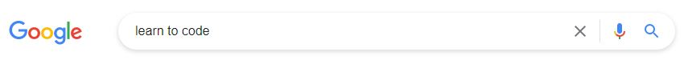
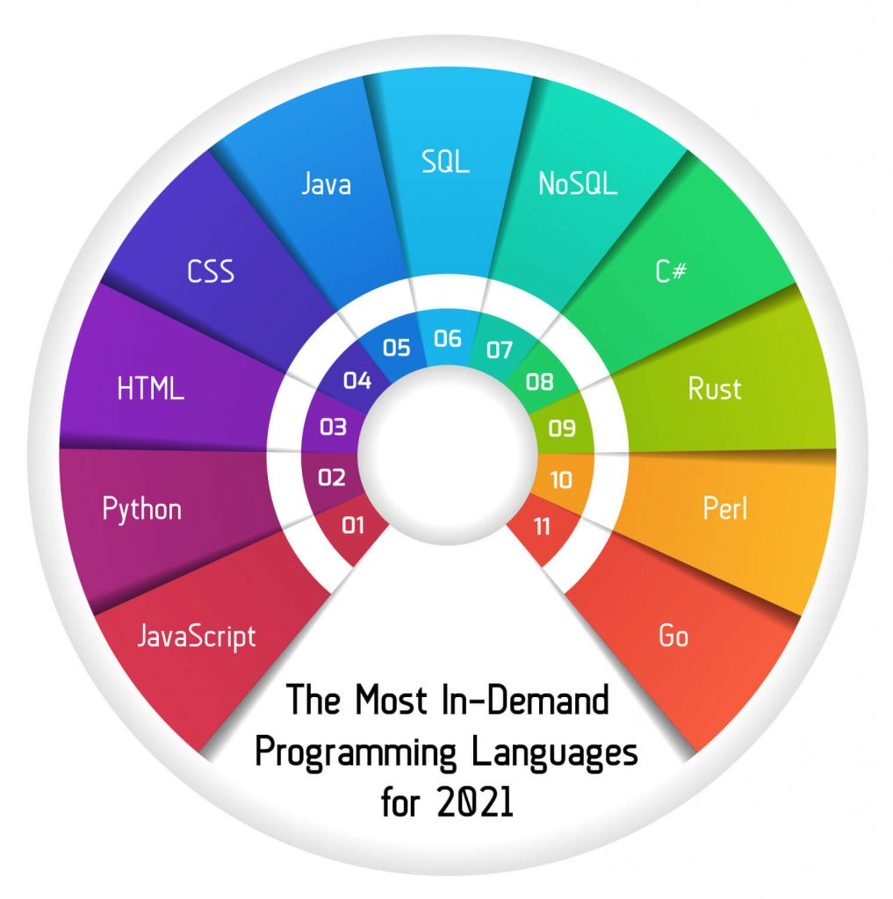

| By Lachelle Pavlovic | Sept 04, 2021 |
When starting out, gaining access to educational content and identifying resources appropriate to your level can often be tricky.
The first links available when searching ‘learn to code’ are listings by larger companies offering fast-tracked courses, boot camps, classes and subscriptions. The internet is vast, and search algorithms will often bring up a more popular link based on rank rather than showing the least complex result.
So, where do you start?
There are many different learning styles, but not all content caters for these. First, identifying your learning styles is critical in optimising your learning. This will enable you to build techniques to better engage and understand the information given, not only aiding you in your studies but equipping you with skills that can be utilised within your career.

Instances of courses and video tutorials are easily accessible, but it can be challenging to source information relevant to your level. Starting with online code editors or interactive tutorial sections that allow you to work with the code gives a more hands-on approach. This will assist you in gaining a better understanding of what code is and how changes within it affect the result.
One of the first recommendations I came across online when looking to start was to come up with a simple project and choose a programming language. This can definitely be a great incentive to begin learning and work on your own passion project, but not all will start with this direction. As you become more attuned to programming, you will find that some project ideas may be too complex to begin with or may have a more suitable language for that project type. In saying this, don't let this deter you from trying and researching different projects to start with!
A search of the most popular programming languages or a language difficulty list is a great guide to commence learning. There are a few websites that provide an easy-to-follow introduction to a range of programming languages. At the end of this blog, I will list a few that I find insightful and regularly use for guidance.
To encourage the most beneficial way of learning, start with a simple project that has been covered well and use your resources as a guide rather than following a video or tutorial. Not only will this assist you in better understanding the code, you will feel more achieved in knowing you figured it out - puzzles are your friends!
A solution can be implemented in many different ways and refined as you learn more. Don’t let a challenge stop you from achieving knowledge.
You don't have to be great to start, but you have to start to be great.
– Zig Ziglar
w3schools EntityFrameworkTutorial CSS-Tricks MDN Web Docs React Native tutorialspoint TutorialsTeacher